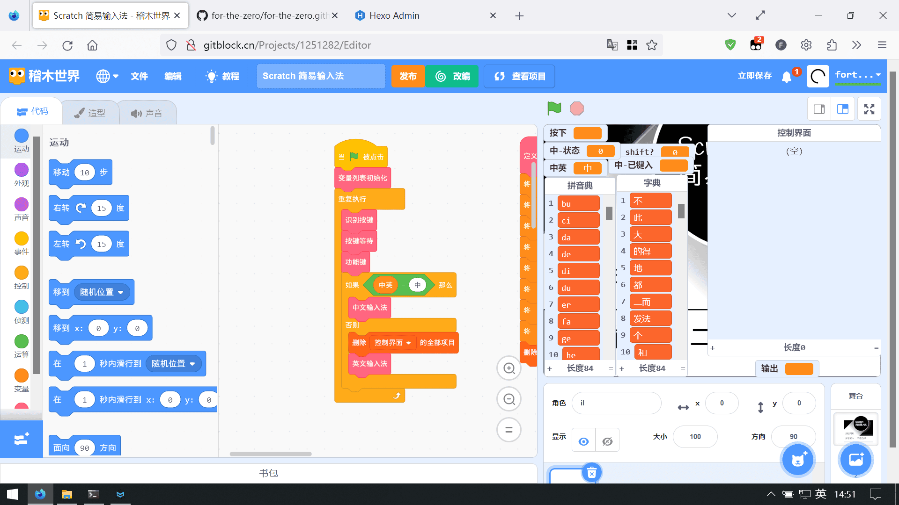
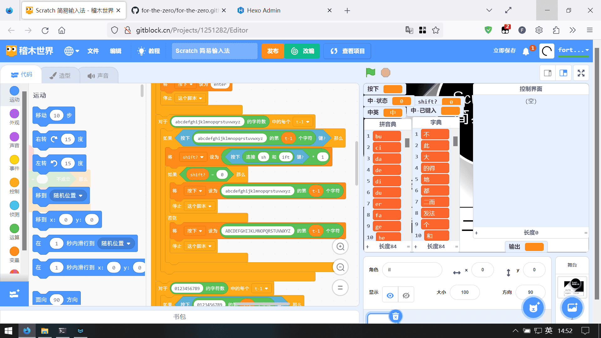
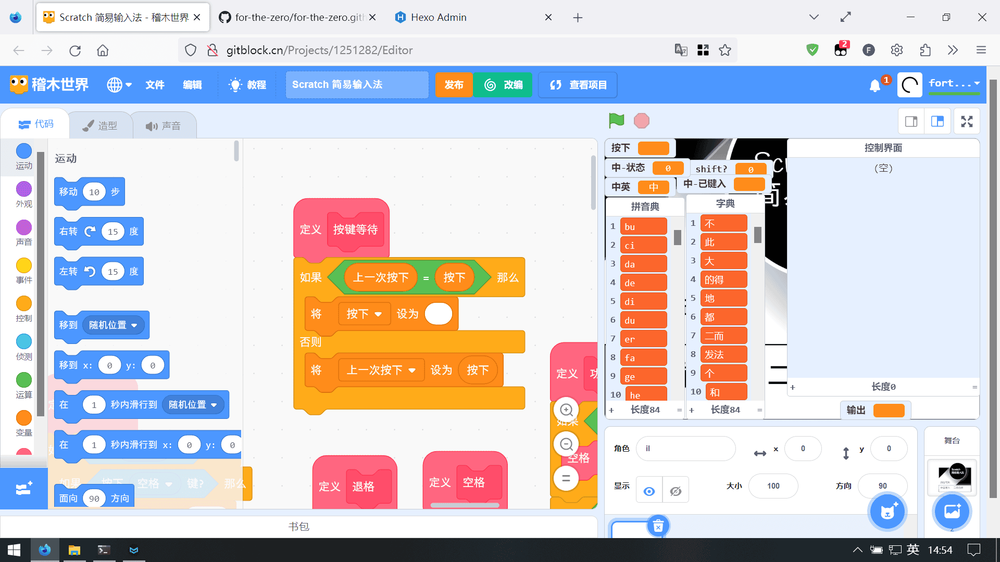
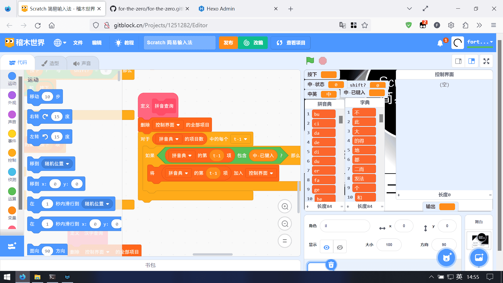
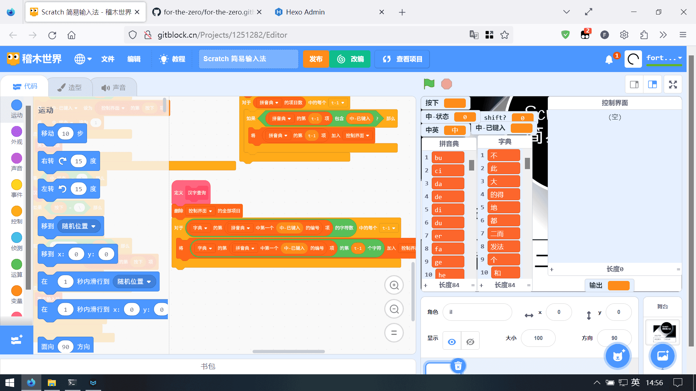

先放点链接：
操作说明
| 按键 | 说明 |
|---|---|
| ` | 切换输入法 |
| | | 退格(英文状态没写，中文在模式0为删除最后字符、1为清空) |
| 大部分符号及英文状态的数字 | 输入 |
| 字母 | 输入 |
| 中文状态的数字 | 选择 |
实现起来不难
1. 大体运行逻辑

（图上写得很清楚了，不写了）
2. 识别按键

利用循环遍历按键，逐个识别即可
3. 解决长按按键

如图
4. 找字

首先得出符合条件的拼音，一样使用遍历，包含输入的即可放到控制面板

根据拼音找字
5. 字典
一个列表是拼音，一行一个
另一个是汉字，每一行互相对应，同拼音的放在同一行
这里使用了python中的xpinying模块获取拼音以及使用shot()排序
别的没什么好写了